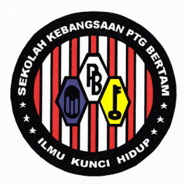
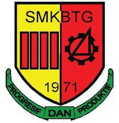

"I did not afraid someone who have talent, but always afraid for someone who hardworking" -Anonymous-
.................................................................
2005 - 2006

Tadika Kampung Paya, Kepala Batas, Pulau Pinang
...I start my study when I am 5 years old. Why I study here while my sister got to study near home and move to tadika area my mother's workplace? Well, it is because its one way to go to my mother's workplace. So, thats why I study in here.
...My most memorable memories from tadika is my teacher's name is same as I but with different spelling. Other than that, in 2006 I think, when there is popular Pinang's tree that form a shape as human face got popular around Malaysia, my family went to there to saw the tree. Eventually, our tadika also make a visit as it is nearby with our tadika. Next, I did not keep contact with my tadika's friends but during 2011, two of them studies in KAFA that I attend to, so we met up at there.
...My another memory that I remember until now are the feeling when we make an orange while using paper and paint. The feeling of how we gather together to make an orange in outside tadika. One more thing that I remember is when there is birthday, my mom and I will pack a chocolate to give to the friends. This is also apply to others parents as well. One of my friends give us a teddy bear with different colour. Until now, I still kept it as a memories.
2007 - 2012
Sekolah Kebangsaan Permatang Bertam, Kepala Batas, Pulau Pinang
... I start my school at 2007 in third class from third class. The names for the classes are Bitara, Bestari and Berkat. After sit for an test to determines the class, I get to second class which is Bestari. I stay in Bestari until 2012. During my first three years in the school, I go to evening session. The other three, I went to morning session. One of memories is when in primary 1, we do plant the bean to see their growing but when pupils from evening session comes they just mess it up. It is because we do share the same class.
... My sister also studies at there.
... Fast forward to 2012, when there is UPSR trials, even my marks is still good but I did not satisfy yet. When the results for UPSR is out, even my self and teachers was suprised by the results. It still funny things to me.
... My curriculum uniforms is scout. I love this uniforms so much because it has many camp. I always participate in camps since 2008 where the NGO in my village do the programs in Bendang Man. Start at there, I always participate in the camps. For me, it is best as I can get to know more about others thing. Back to scout, I do wich that my secondary school is gonna have scouts because I want to be it again, but 'one wil cannot always be approve', my secondary school did not have scouts. T-T.
... There are so many memories in my primary school that if I tell, I think until 50 pages this stories cannot be done. >-<. So thats all for my primary school. Sometimes, I think that maybe I need to write my stories in books as we did not know the future. What if I suddenly have amnesia? This memories will gone like waterfall. Scarry if I think about it though. Nevermind, so thats all for primary school.
2008 - 2009 , 2011 - 2012
Maahd Taqaddum al-Watani, Pajak Song, Kepala Batas, Pulau Pinang
... I start my KAFA school when I am 8 years old. Why did not start in 2007? My mom think that thats ages are too young to go to school morning and evening, so that a reason why my sisters and I start our KAFA school in 2008.
... My most memorables memories is when I success to memorize Juz' Amma in 8 or 9 years old. I got a pencil case with full stationary from my own mother as she teach the subjects. There is no special serve as I am one of the teacher's child. I success to recite the Juz' Amma in front of my classmates. It is one of most memorable stories during my studies at there.
... 2010, I change KAFA school to near to my home.
... In 2011, I move back to this school as it is difficult for me as my primary school and my 2010-KAFA school located at two different districs. 2011 is important year as I took my UPKK exam. Alhamdulillah, I got 7A out of 8 subjects. My SRA's result in 2012 also have satisfy me. I still manage to do SRA and UPSR in the same year.
2010
Madrasah al-Irsyadatul Atfal, Kampung Tok Bedu, Tasek Gelugor, Pulau Pinang
... Why my mom put me in this school? beacuse it is a try out as I always want to go to scool by bicycle. Speaking of bicycle, in 2011, my primary school make a trip to Balai Bomba Kepala Batas by bicycle, so I get my bicycle carry in car until school before everyone cycling to go to Balai Bomba. One of the best experence for me. Back to KAFA stories, I always want to go to school by bicycle, and befoe this after primary school's term is done, we will went to tok's house to eat and bath. My mom thoughts that what is in one year we went to our home before go to KAFA, thats why I go to this school. My friends are already studies at there since 2007, so I joins them by bicycles to our KAFA school together. One of my memories are we always leave home early, then we will enter the 'Ladang Kelapa Sawit' to explore it before go to our friends' house to take them before go to schools. The reasons why we go to 'Ladang Kelapa Sawit' is because as the soil in there is always uneven, so it is a thrilling experience for us.... For me, this is always the best experience while studying in that school alongside with my friends. AFter we went home and change the cloth, we will go out to play again with the same friends and others.
2013 - 2017
Sekolah Menengah Kebangsaan Bakti, Tasek Gelugor, Pulau Pinang
... From 2013 until 2017, I stay in hostel in this school. Thre reasons for sit because my mon want me to have calm environment while studying as my younger sister always disturb me. So while staying in hostel, there are a lot of memories that I cannot easily forget.
... I become a prefect in 2015 until 2017. I also become a secretary of Puteri Islam in 2017 and hostel's secretary from 2016 until 2017. My experience in secondary school are so so many as it is a compilation of hostel and school. From 2013 to 2015, I stay in class KAA because I got an offered to be in this class. I am the only one from my primary school enter this school as there are many secondary schools around my primary school. My PT3 result comes in a flying colors and Alhamdulillah too, as my SPM's result is okay for me.
... For 2016 and 2017, I stay in core science class so I take a hard core subject such as Physics, Biology, Chemistry, and Add Math. Why did I choose this course, in 2016, I am amazed by senior who studying this subjects in hostel's studying room. Other than that, maybe the effect of friends. Well, many of my friends from KAA got here so mant thats a thing that make me want to be in this class also. Thats is a think that attract me to it, but what I must say is what if I take Geography as I always like this subject until now. Maybe I got something better? but this is a path that I choose so I must walk in it. Right now, I did not have any regrets about this as I believe that thare must be something miracle about it.
... I must say that in 2017, I am excited about going to PLKN as I always want to go there. There is a forms for volunteer who want to go to PLKN and my friends and I fill it. Alhamdulillah I get to go to this PLKN's camp at Bukit Mertajam. The date is on 14th July 2018. Little did I know that that is also a date to go to my university life. So, I must say bye-bye to PLKN. When I tells this story to my friends, she said that we can requests to do PLKN earlier. HAHAHAHA.. only if I know, I will definitely request it. Later, PLKN's program is ended by government and I am feeling so sad about it cause I have never feel the feeling and I will not get a chance to feel it anymore.
July 2018 - February 2021
Universiti Teknologi Mara, Cawangan Merbok, Kedah
... In 2017 also, I request to go to Kolej Matrikulasi and I got the offer earlier than UPU's offer. I am in dilemma as 1/4 of my heart want to try it out meanwhile
others said that wait until UPU. But, my family, cousins and aunt said that I have been offered to it, go to it because what if I did'nt get UPU? So, I do a
preparation to go to Matrikulasi and Alhamdulillah my UPU'results comes and I get to go to university. One of the best days in my life, I think.
... 14th July 2018, my day in university begin. I get a Diploma in Information Management. To be honest, I did not request this course at all but I do tick agree to be
offer another course, so I think thats why I got this course. This course required me to spent 2 years and half to get the diploma and this year (2021) is my last
year. From my opinion, this course do teach me everything new and some of the subject in this course truly get me attracted to. Since earlier day until March 2020,
the learning processes are done in campus but since there is pandemic from then until now, students need to learning from home. Eventhough there are some happiness about
learning in home, but for me I do prefer face to face learning as it will be more satisfying. The feeling of have nobody to talk about this subjects in face to face
always overwhelming me. I have a good friends from the same class but the feeling is still not the same as face to face.
... I think in order to continue my study to degree, I need to cope with that situation and try to be more positive. I do hope I get the degree thru degree's application.
It can make me finish my study earlier as I can cope the two earlier semesters which as same as one year.
.................................................................
For me, Alhamdulillah, since tadika until nows, my teacher, cikgu, ustaz, ustazah, sir, madam, and puan are always so kind and understanding. Lucky for me, that I stay
get in touch with most of them. For me, the sacrifice of teacher cannot be compare to anything as they always do their their best to give a better education to people.
What can I truly say is, I always grateful to my parents as they always supportive to whatever I done and path that I choose. Education is truly important for someone.
Eventhough Steve Jobs did not end his university life, but it still education that make him right now!
Universiti Teknologi Mara, Cawangan Merbok, Kedah
... In 2017 also, I request to go to Kolej Matrikulasi and I got the offer earlier than UPU's offer. I am in dilemma as 1/4 of my heart want to try it out meanwhile others said that wait until UPU. But, my family, cousins and aunt said that I have been offered to it, go to it because what if I did'nt get UPU? So, I do a preparation to go to Matrikulasi and Alhamdulillah my UPU'results comes and I get to go to university. One of the best days in my life, I think.... 14th July 2018, my day in university begin. I get a Diploma in Information Management. To be honest, I did not request this course at all but I do tick agree to be offer another course, so I think thats why I got this course. This course required me to spent 2 years and half to get the diploma and this year (2021) is my last year. From my opinion, this course do teach me everything new and some of the subject in this course truly get me attracted to. Since earlier day until March 2020, the learning processes are done in campus but since there is pandemic from then until now, students need to learning from home. Eventhough there are some happiness about learning in home, but for me I do prefer face to face learning as it will be more satisfying. The feeling of have nobody to talk about this subjects in face to face always overwhelming me. I have a good friends from the same class but the feeling is still not the same as face to face.
... I think in order to continue my study to degree, I need to cope with that situation and try to be more positive. I do hope I get the degree thru degree's application. It can make me finish my study earlier as I can cope the two earlier semesters which as same as one year.
.................................................................
For me, Alhamdulillah, since tadika until nows, my teacher, cikgu, ustaz, ustazah, sir, madam, and puan are always so kind and understanding. Lucky for me, that I stay get in touch with most of them. For me, the sacrifice of teacher cannot be compare to anything as they always do their their best to give a better education to people. What can I truly say is, I always grateful to my parents as they always supportive to whatever I done and path that I choose. Education is truly important for someone. Eventhough Steve Jobs did not end his university life, but it still education that make him right now!